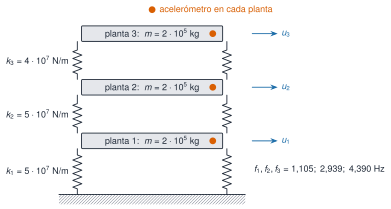

Un único modelo, conocido al detalle, que se usa en todo el módulo: un edificio de cortante de tres plantas con tres acelerómetros. Al ser sintético, se sabe de antemano la respuesta correcta (frecuencias, amortiguamientos y formas modales), de modo que cada método de identificación y de detección de cambios se puede validar contra la verdad. Los datos son los de datos/sinteticos/edificio-3-plantas/; el código que los genera está en scripts/m02/generar_edificio.jl.
NotaQué es y qué no es
Es un banco de pruebas, no un edificio real. Sirve para aprender y para comprobar que un algoritmo hace lo que dice; no demuestra que ese algoritmo funcione en una estructura real, con ruido coloreado, no linealidades y variaciones ambientales mucho más complejas. Para datos reales, véanse los puentes de R1.
El modelo

Figura 1: Edificio de cortante de tres plantas: masas concentradas en las plantas, rigideces laterales de entrepiso y un acelerómetro por planta. Las fuerzas ambientales, independientes en cada planta, no se miden.
Las ecuaciones son las de M2.2 y M2.6: \(\mathbf M\ddot{\mathbf u}+\mathbf C\dot{\mathbf u}+\mathbf K\mathbf u=\mathbf f(t)\), con \(\mathbf M=m\mathbf I\), \(\mathbf K\) tridiagonal (edificio_cortante) y amortiguamiento de Rayleigh \(\mathbf C=\alpha\mathbf M+\beta\mathbf K\) elegido para que \(\zeta=1\,\%\) en los dos primeros modos. Se excita con fuerzas de ruido blanco independientes en las tres plantas (desviación típica \(2\cdot10^4\) N por muestra) y se mide la aceleración absoluta de cada planta a 100 Hz, con ruido de sensor de \(0{,}002\) m/s².
Ver el código
filas = ["| $j | $(coma(f3[j]; d=3)) | $(coma(100* zeta3[j]; d=2)) | $(join(coma.(Phi3[:, j] ./ Phi3[argmax(abs.(Phi3[:, j])), j]; d=3), "; ")) |" for j in1:3]Markdown.parse("| Modo | f (Hz) | ζ (%) | Forma (plantas 1; 2; 3) |\n|:--:|--:|--:|:--|\n"*join(filas, "\n"))
Tabla 1: Propiedades modales verdaderas del escenario A.
Modo
f (Hz)
ζ (%)
Forma (plantas 1; 2; 3)
1
1,105
1,00
0,420; 0,759; 1,000
2
2,939
1,00
1,000; 0,636; -0,903
3
4,390
1,27
-0,958; 1,000; -0,357
Los tres escenarios
Tabla 2: Escenarios del caso transversal. Cada registro dura 600 s a 100 Hz, con una semilla distinta.
Escenario
Qué representa
Cambio en el modelo
Archivo
A
Estado de referencia
ninguno
escenario_A.csv
B
Variabilidad ambiental (p. ej., temperatura)
las tres rigideces un \(1\,\%\) menores
escenario_B.csv
C
Daño localizado
el entrepiso 2 pierde un \(10\,\%\) de rigidez
escenario_C.csv
El objetivo pedagógico es la pregunta central de la monitorización: ¿un cambio de frecuencias es un daño o es variabilidad? En B todo cambia un poco y de forma coherente (las frecuencias bajan todas un \(0{,}5\,\%\)); en C cambia de forma desigual y las formas modales se alteran levemente.
Ver el código
res =Dict{Symbol,Any}()forein (:A, :B, :C) M, _, K =edificio_tres_plantas(escenario=e) res[e] =modos_propios(K, M)endfilas =String[]forein (:B, :C), j in1:3 f, P = res[e]push!(filas, "| $e | $j | $(coma(res[:A][1][j]; d=3)) | $(coma(f[j]; d=3)) | $(coma(100* (f[j] / res[:A][1][j] -1); d=2)) % | $(coma(mac(res[:A][2][:, j], P[:, j]); d=4)) |")endMarkdown.parse("| Escenario | Modo | f en A (Hz) | f (Hz) | Δf/f | MAC |\n|:--:|:--:|--:|--:|--:|--:|\n"*join(filas, "\n"))
Tabla 3: Frecuencias verdaderas de cada escenario, variación respecto de A y MAC con las formas de A.
Escenario
Modo
f en A (Hz)
f (Hz)
Δf/f
MAC
B
1
1,105
1,099
-0,50 %
1,0000
B
2
2,939
2,924
-0,50 %
1,0000
B
3
4,390
4,368
-0,50 %
1,0000
C
1
1,105
1,084
-1,85 %
0,9998
C
2
2,939
2,931
-0,24 %
0,9995
C
3
4,390
4,254
-3,11 %
0,9993
Las frecuencias del escenario C bajan \(1{,}85\,\%\), \(0{,}24\,\%\) y \(3{,}11\,\%\) (de forma desigual, como predice la perturbación de M2.2), y el MAC se mantiene por encima de \(0{,}999\).
Figura 2: Densidad espectral de potencia (Welch, segmentos de 2048 muestras) de la aceleración de la cubierta en los tres escenarios. Las líneas grises son las frecuencias verdaderas del escenario A. Los tres picos están presentes en los tres registros y se desplazan poco; el desplazamiento del escenario C es visible en el primer y el tercer modo.
Para ver si el cambio se puede detectar, se estima la frecuencia de cada pico en 10 bloques de 60 s por escenario (Welch con interpolación parabólica del máximo) y se mira la media y la dispersión:
Ver el código
functionpico(f, P, f0) idx =findall(x ->abs(x - f0) <0.4, f) k = idx[argmax(P[idx])] a, b, c =log(P[k-1]), log(P[k]), log(P[k+1])return f[k] +0.5* (a - c) / (a -2b + c) * (f[2] - f[1])endest =Dict()forein ("A", "B", "C") m =zeros(10, 3)for b in1:10 seg = datos[e][(b-1)*6000+1:b*6000, 4] f, P =psd_welch(seg .-mean(seg), 100.0; nseg=2048)for j in1:3 m[b, j] =pico(f, P, f3[j])endend est[e] = mendverdad =Dict(e=> res[Symbol(e)][1] forein ("A", "B", "C"))filas =String[]forein ("A", "B", "C"), j in1:3push!(filas, "| $e | $j | $(coma(verdad[e][j]; d=3)) | $(coma(mean(est[e][:, j]); d=3)) ± $(coma(std(est[e][:, j]); d=3)) |")endMarkdown.parse("| Escenario | Modo | f verdadera (Hz) | f estimada (Hz) |\n|:--:|:--:|--:|:--|\n"*join(filas, "\n"))
Tabla 4: Frecuencia estimada de cada pico en bloques de 60 s de la aceleración de la cubierta: media ± desviación típica entre los 10 bloques de cada escenario, frente al valor verdadero.
La dispersión de un bloque de 60 s es de \(0{,}01\)–\(0{,}04\) Hz, y a veces mayor que el cambio buscado: con un solo bloque, el primer modo del escenario C (\(-0{,}02\) Hz) apenas se distingue del A.
Con los 10 bloques sí. El error típico de la media es unas \(\sqrt{10}\approx3{,}2\) veces menor, y el cambio de C (\(-1{,}9\,\%\) en el primer modo) queda claramente separado; el de B (\(-0{,}5\,\%\), unos \(0{,}005\) Hz) no se separa de la dispersión: con este método no se distingue de «no pasa nada».
La estimación tiene sesgo: las medias de A no coinciden exactamente con la verdad (el tercer modo sale a unos \(0{,}03\) Hz de ella, por la resolución del Welch y la cercanía del modo 2).
Es la antesala de M12: la detección útil exige cuantificar la incertidumbre del estimador y compararla con la variabilidad del estado sano, y no basta con ver que un número cambia.
Cómo se usa el caso en el resto de M2
Tabla 5: Dónde aparece el edificio. En las fases siguientes se usará también para correlación, FDD, SSI y detección de cambios.
El código Python no se ejecuta en la web; los modelos del edificio están probados con pytest en python/matrices.py.
«Pídeselo a Claude»
TipPrompt
«Con Julia y Resonancia: lee escenario_A.csv, escenario_B.csv y escenario_C.csv. Para cada uno, divide la aceleración de la cubierta en bloques de 60 s, estima la frecuencia del primer pico con Welch e interpolación parabólica y dame media y desviación típica. Dime qué escenarios se distinguen del A con un criterio de dos desviaciones típicas de la media, y qué limitaciones tiene esa conclusión.»
Verifica. (a) Que usa psd_welch y buscar_picos del paquete. (b) Que compara contra las frecuencias verdaderas de edificio_tres_plantas. (c) Que usa el error típico de la media y no la desviación de un bloque al comparar medias. (d) Que dice que el sesgo del estimador existe y no lo oculta. (e) Que no llama «daño» a lo que solo es un cambio estadístico.
Ejercicios
¿Cuánto varía, en porcentaje, la frecuencia del primer modo en el escenario C respecto del A?
\(-1{,}85\,\%\) (\(1{,}105\to1{,}084\) Hz).
¿Qué modo cambia más su frecuencia en el escenario C?
El primero.
El segundo.
El tercero.
Los tres igual.
La c: \(-3{,}11\,\%\) frente a \(-1{,}85\,\%\) y \(-0{,}24\,\%\); el tercer modo tiene la mayor deriva en el entrepiso 2.
¿Por qué se incluye un escenario B si el objetivo es detectar daño?
Digo que en una estructura real las frecuencias cambian sin daño (temperatura, humedad, carga).
Explico que un detector debe distinguir el cambio de C de la variabilidad de B, y no tomar todo cambio por daño.
Menciono que sin ese contraste habría falsas alarmas.
B reproduce la variabilidad ambiental sana. Un método útil debe dar alarma en C y no en B; si no distingue ambos, tendría falsas alarmas o dejaría pasar el daño.
La doy por superada si…
Qué no dice esta página
Los datos son sintéticos y lineales, con ruido blanco; no incluyen no linealidades, ruido coloreado ni efectos reales de la temperatura.
La variabilidad ambiental se modela solo como un cambio uniforme de rigidez; en estructuras reales es más compleja.
Los resultados de la tabla de picos son de un registro por escenario y una semilla; no se ha hecho un estudio de Monte Carlo.
La detección con criterios estadísticos rigurosos se trata en M12.